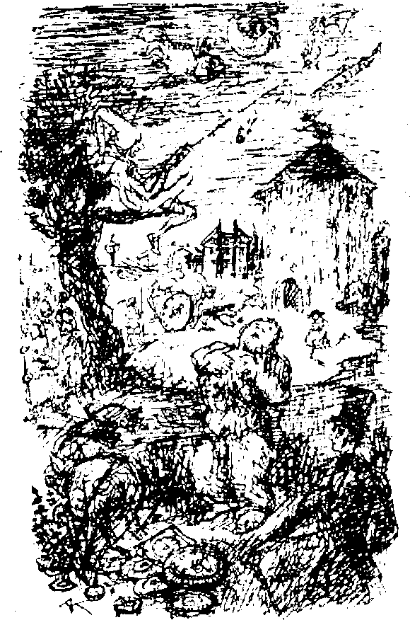

III: Rüyanın Karışıklığı
O gece kafamda ciddi düşüncelerle uykuya daldım. Gördüğüm rüya çok ciddi olmasa da oldukça tuhaftı. Bu yüzden rüyamı burada anlatmam gerektiğini hissediyorum. Kendimi büyük bir nehrin yanında dururken gördüm. Normalden daha da geniş ve güzel gözüken Dış Yerleşim’i hasretle izliyordum. Bir seraptaki gibi birbirine karışmış, sarmalanıp dolanmış halde göz alabildiğine köprüler, kuleler, yel değirmenleri, sivri tepeler uzanıyordu. Karmaşa içinde etrafta büyük ve küçük, sıska ve şişman insanlar dolaşıyordu. Karşıya bakarken arkamda duran değirmenciyi hissedebiliyordum. “Onu öldürdüm", diye fısıldadı ve beni suya itmeye çalıştı. Ne tuhaftır ki bu esnada sol bacağım uzadı ve hiç zorluk çekmeden diğer taraftaki kaynaşan kalabalığın içine adım attım. Şimdi her taraftan gelen bir saat tıklaması duyuyordum. Duvar saatinden saat kulesine, mutfak saatinden en küçük cep saatine kadar her büyüklükte saatler gördüm. Kısa, tıknaz bacakları vardı ve çimenlerde birbirlerinin üzerinden kaplumbağalar gibi sürünüyor, heyecanla tıkırdıyorlardı. Açık yeşil deriden bir kıyafet giymiş ve beyaz sosise benzeyen bir şapka takmış bir adam yapraksız bir ağacın üzerinde oturuyor, havada balık tutuyordu. Yakalayıp dallara astığı balıklar anında kuruyordu. Anormal büyüklükte bir gövdeye ve kısa bacaklara sahip yaşlı bir adam bana yaklaştı. Üzerinde bahçıvan pantalonundan başka bir şey yoktu. Bol bol oflayıp poflayarak ciğerlerini havayla doldurdu. Göğsünün bir sol kısmı şişiyordu, bir sağ kısmı. Sonra parmaklarını on sekiz meme ucunun üzerinde gezdirerek en güzel akordeon parçalarını çaldı. Ritmle birlikte havayı bırakırken dans eden bir ayı gibi hareket ediyordu. Sonunda çalmayı bıraktı, burnuyla ellerine üfledi ve ellerini attı. Sonra sakalı upuzun oldu ve adam bir kıl yumağı içinde kayboldu. Yakındaki bir çalılığın içindeki birkaç şişman domuzu rahatsız ettim. Tek sıra halinde benden kaçtılar. Gürültülü homurtular çıkararak küçüldüler ve yol kenarındaki bir fare deliğine girip ortadan kayboldular.
Arkamda - bu beni rahatsız ediyordu - değirmenci nehir kenarında oturuyor, büyük bir gazeteyi inceliyordu. Gazeteyi okuyup yedikten sonra kulaklarından dumanlar çıktı. Yüzü bakır rengi oldu, ayağa kalktı ve sarkan kamını iki eliyle kavradı. Nehir kıyısında bir yukarı bir aşağı koşturuyor, etrafa öfkeyle bakıyor ve tiz ıslıklar çalıyordu. Sonunda yere yığıldı, rengi soldu, vücudu aydınlandı ve şeffaflaştı. Böylece bağırsaklarında vızıldayarak ilerleyen iki tren yolu görülebiliyordu. İki tren de birbirini yakalamaya çalışıyor gibiydi. Karnındaki bir kavşaktan ötekine yıldırım hızıyla atlıyorlardı. Başım dönmüş ve şaşırmış bir halde değirmenciye yardım teklif edecektim ki cümlem etrafıma süratle yuvarlak bir bahçe diken bir şempanze tarafından kesildi. Nemli topraktan kuşkonmaza benzeyen, dolgun, elma yeşili sarmaşıklar fırlıyordu. Bu canlı parmaklıklarla çevreleneceğim için endişe duyuyordum, ama daha ne olduğunu bile anlamamışken serbest kaldım. Ölü değirmenci artık şeffaf değildi ve vücudu sarsılırken etrafa yüzlerce, binlerce küçük süt rengi yumurtadan oluşan bir halka yaymıştı. Bu yumurtalardan sümüklüböcek orduları çıkıp yaratıcılarını yedi. Etrafa keskin bir füme et kokusu yayıldı ve şişman sarmaşıkları eritip çürütüp dağıttı. Dış Yerleşim, titreyen mor ipliklerden oluşan bir ağın içinde kayboldu.
Nehrin kıyısında bir mercan kayası gibi rahatça yatan devasa bir deniz kabuğu gördüm ve üzerine atladım. Bir felaket daha! Hareketten dolayı gerilen kabuk açıldı ve Olay tehlikeli bir hal aldı. Kabuğun içinde oynaşan peltemsi bir madde vardı ve... uyandım.